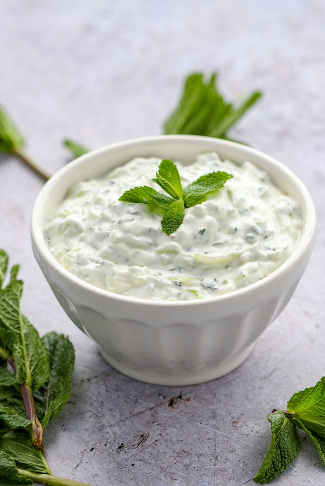

Home
Main Dish: Chicken Biryani
Side Dishes: Chapati,
Dal,
Raita

Description:
Raita is a cooling and refreshing yogurt-based side dish that pairs exceptionally well with the spiciness of Chicken Biryani and the versatility of chapati.
- 1 cup plain yogurt (curd)
- 1/2 cup cucumber, peeled and grated
- 1/4 cup finely chopped fresh mint leaves
- 1/4 cup finely chopped coriander (cilantro) leaves
- 1 small red onion, finely chopped
- 1-2 green chilies, finely chopped (adjust to taste)
- 1/2 teaspoon roasted cumin powder
- Salt, to taste
- A pinch of black pepper (optional)
- Freshly squeezed lemon juice, to taste (optional)
Instructions:
- Prepare the Yogurt:
- In a mixing bowl, whisk the yogurt until it becomes smooth and creamy.
- Add Cucumber and Vegetables:
- Add the grated cucumber, chopped mint leaves, chopped coriander leaves, finely chopped red onion, and green chilies to the yogurt.
- Seasoning:
- Sprinkle roasted cumin powder over the mixture. You can adjust the quantity based on your preference.
- Add salt to taste. Be mindful if your Chicken Biryani is already salty.
- Mix Well:
- Gently mix all the ingredients until they are well combined.
- Adjust Consistency:
- If the raita is too thick, you can add a small amount of water or milk to achieve your desired consistency.
- Chill:
- Refrigerate the raita for at least 30 minutes before serving. This allows the flavors to meld, and the raita becomes cool and refreshing.
- Optional Additions:
- If you like, you can add a pinch of black pepper for some extra heat.
- A squeeze of fresh lemon juice can enhance the freshness of the raita.
- Serve:
- Serve the cucumber raita alongside your Chicken Biryani and chapati for a delicious and cooling contrast.
Return to Top of Page